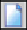

Итоговая работа по курсу "Основы пользования системой Alfa"
*Выберете один или несколько правильных ответов
Вопрос 1: Какое значение необходимо выбрать при подключении к рабочей базе в поле Имя подключения?
Вопрос 2: Какая вкладка отобразится в окне, если нажать на кнопку ?
Вопрос 3: Необходимо ли указывать точки при ручном вводе в поле ввода даты?
Вопрос 4: Что означает кнопка  ?
Вопрос 5: Как сбросить настроенную фильтрацию?
Вопрос 6: Какие виды контекстного меню существуют?
Вопрос 7: Как убрать из отображения столбец в окне списка?
Вопрос 8: Что произойдет на экране при выборе в контекстном меню списка команды Автофильтр?
Вопрос 9: Что означает кнопка на панели инструментов?
Вопрос 10: Как настроить область итогов «Сумма» по столбцу с числовым значением?